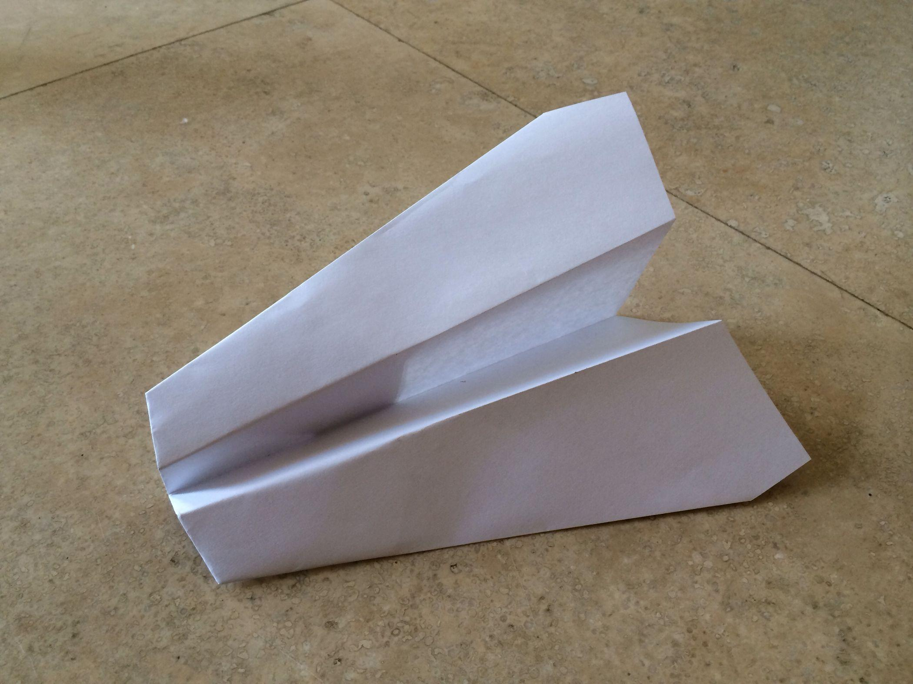
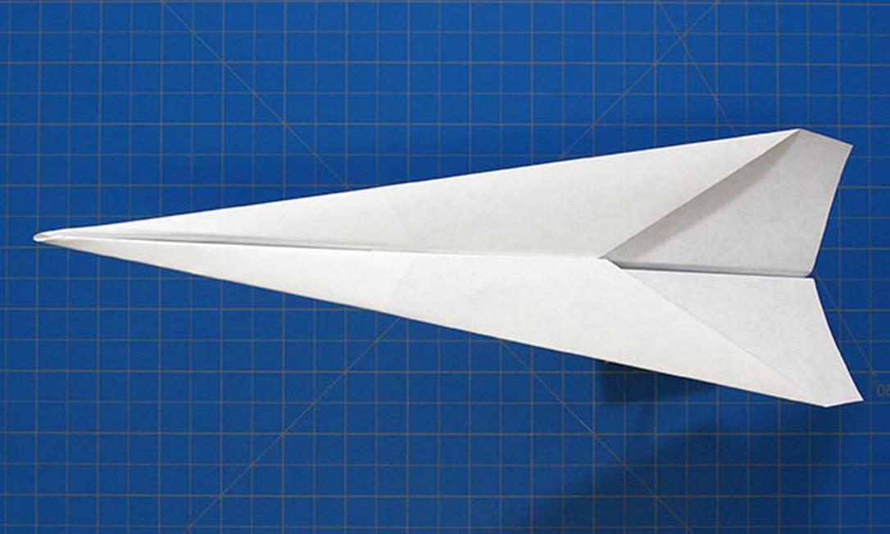
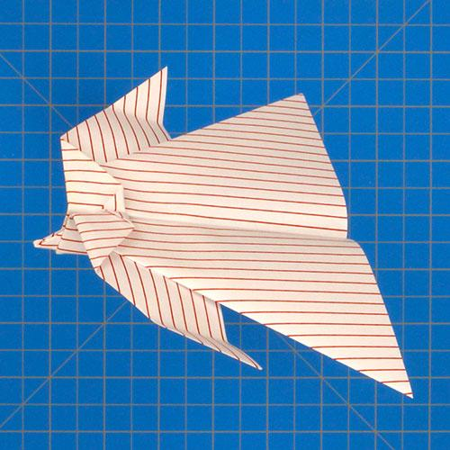
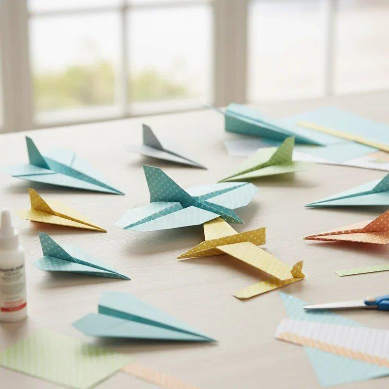
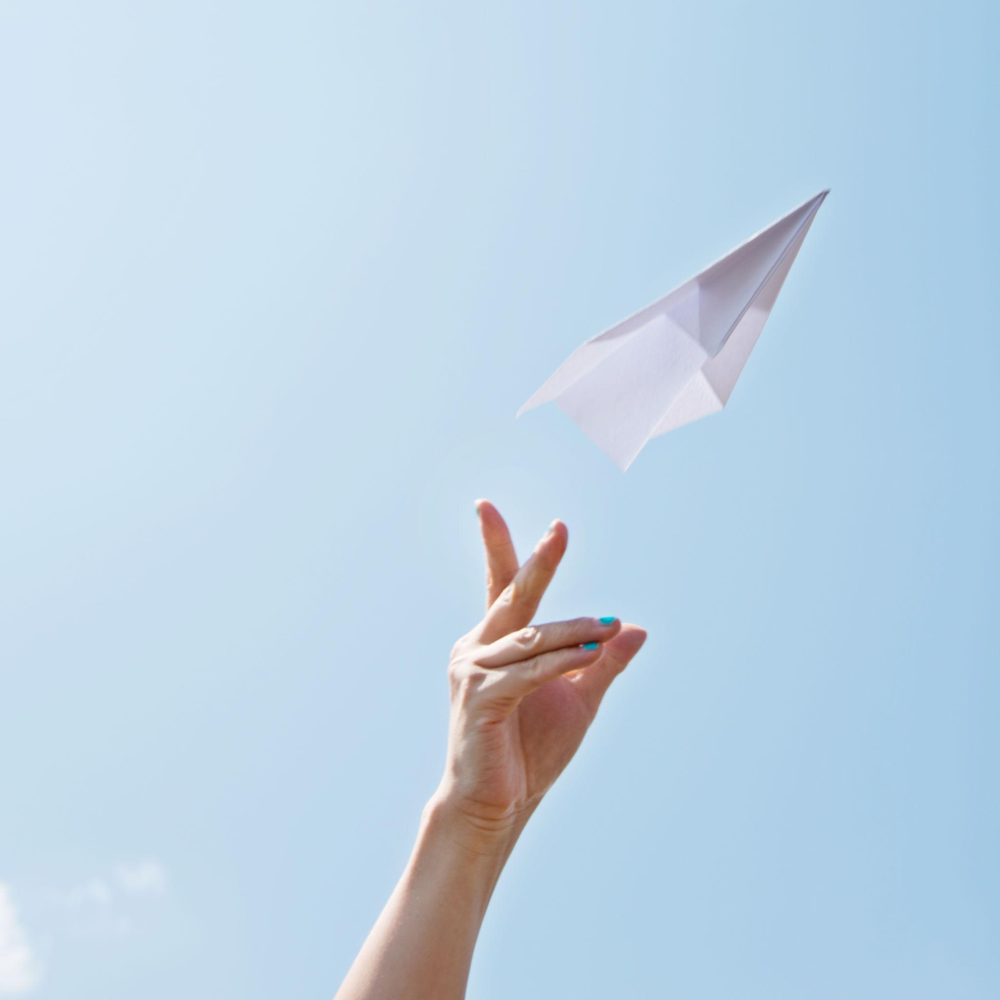
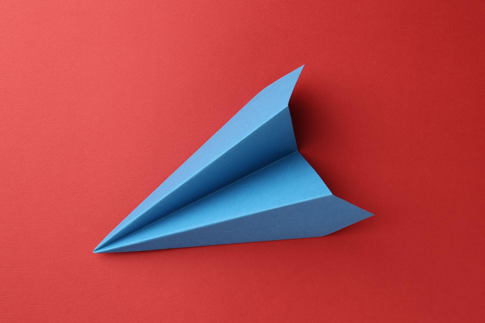

Discover the science, creativity, and fun behind paper airplanes! From simple designs to advanced gliders, explore how a single sheet of paper can fly through the air.
Fold it. Fly it. Master it.
About Paper Planes
What Are Paper Airplanes?
Paper airplanes are miniature aircraft made by folding a sheet of paper into a shape that can glide through the air. They are fun to make, easy to customize, and a great way to learn the basics of aerodynamics
People around the world enjoy paper airplanes as a hobby, a creative activity, and even a way to experiment with flight and engineering.
Types of Paper Planes

The Glider
Features wider wings that can help it stay in the air longer when folded and launched correctly.

The Dart
A pointed, streamlined design made for fast, straight flights. It is one of the easiest paper airplanes for beginners.

The Stunt Plane
Designed for experimenting with unusual flight paths, turns, and different folding styles.
How to Make a Paper Airplane
Materials Required
One rectangular sheet of paper (A4 size recommended)
A flat surface for folding
Step-by-Step Instructions
Fold in Half: Fold the paper lengthwise and unfold it to create a center crease.
Fold the Corners: Bring the top two corners toward the center line.
Create the Nose: Fold the sloping edges toward the center again to form a pointed front.
Fold the Plane: Fold the paper in half along the original center crease.
Make the Wings: Fold each side downward to create two symmetrical wings.
Ready to Fly: Open the wings, check that both sides are even, and gently launch your airplane!
Pro Tip: Small, symmetrical folds can make a noticeable difference in how your paper airplane flies.
The Science Behind Paper Planes
How Do Paper Airplanes Fly?
Paper airplanes demonstrate four important forces of flight:
Lift: The aerodynamic force that helps support the airplane in the air.
Gravity: Pulls the airplane toward the ground.
Thrust: The forward push provided by your hand when launching.
Drag: Air resistance that slows the airplane down.
The airplane's shape, wing design, balance, and launch angle all influence its flight. Experimenting with different folds helps you understand these principles in a fun, practical way.
Images



Fun Facts
Did You Know?
Paper airplanes can be designed for speed, distance, stability, or flight duration.
Small changes in wing shape can significantly affect flight performance.
Paper airplane competitions often challenge participants to achieve the longest flight or the greatest distance.
Making paper airplanes is a simple way to explore engineering, creativity, and physics.
The world record for paper airplane distance is over 88 metres, achieved by a specially designed paper aircraft.
Want to learn more about paper airplanes and how to make them check this website by click this airplane
Want to make a plane right now but dont have any idea how to start here is a video to make a world record paper plane 👇🏻
Conclusion / Footer
One Sheet of Paper. Endless Possibilities.
Paper airplanes prove that even the simplest materials can inspire creativity and scientific discovery. Keep folding, keep experimenting, and let your imagination take flight!
Designed with curiosity by an AI Club first-year student.